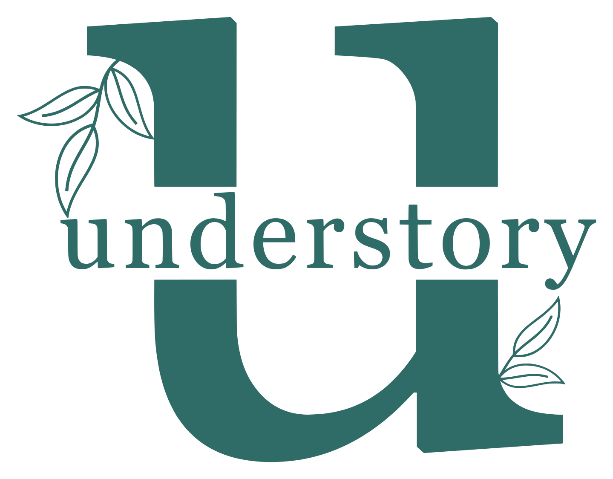

People strategy
The long-term, mostly invisible structural work: hiring decisions, development plans, succession planning, the systems everything else depends on.
Learn more
I help small businesses and individuals grow with confidence through practical HR support and coaching. For small business owners, I offer hands-on HR consulting to simplify 'people challenges' and build stronger teams. My business coaching helps you navigate decisions, boost performance, and lead with clarity. For individuals, I provide personal coaching to help you move forward with purpose, whether that's in your career or personal goals. And if you're job hunting, my CV optimisation service ensures your strengths and story stand out from the crowd, in the era of AI.
Understory works in the layer most firms don't see: the root systems that move knowledge and resources between people, and the structural decisions that determine who gets space to grow. One parent practice, three service lines, each mapping to a distinct point in the same system: below ground, in the canopy, and at the point where a person meets a role.
The long-term, mostly invisible structural work: hiring decisions, development plans, succession planning, the systems everything else depends on.
Learn moreDeciding where scarce resources (time, budget, leadership attention, room to grow) get allocated across your organisation and your people.
Learn moreCV and interview work for both sides of the hire: candidates presenting themselves accurately, and hiring teams choosing well.
Learn moreI am an HR professional based in South Africa with experience that spans consulting, coaching, organisational development, and HR strategy. With a fervent belief that small, consistent changes in preparation, practice, and systems coaching can maximise your individual and the company's potential, I bring an honest approach to help you navigate your career and workplace goals.
More about me“I had hit a bit of a roadblock in my sales leadership career until I met Caroline. Under her guidance I was able to find my voice and confidence in a very male dominant environment. Caroline helped me chart a realistic career path with measurable milestones and timelines, her big picture approach and then breakdown of that picture was life changing. Thank you Caroline for being an integral part of my success in leadership.”
“Caroline was a huge help with my first post-university interview. She gave me great guidance on what to expect and how to approach the process, which made it less daunting. She also helped me recognise my strengths and how to showcase them during interviews. I'm very grateful for her support, and I know that the prep work we did together played an instrumental role in a successful interview.”
That's normal, and it's exactly what a first conversation is for. No cost, no pressure, just a clear sense of whether we're a fit.
Talk to us